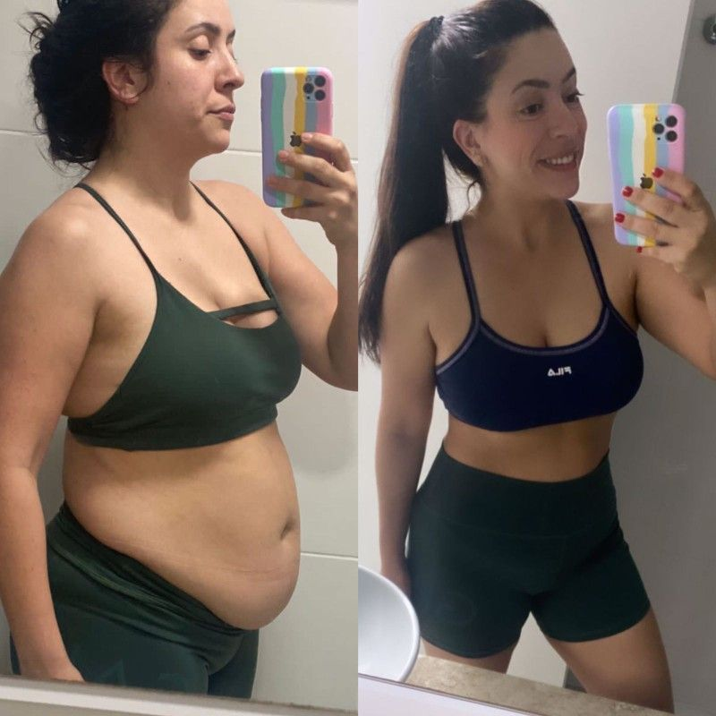
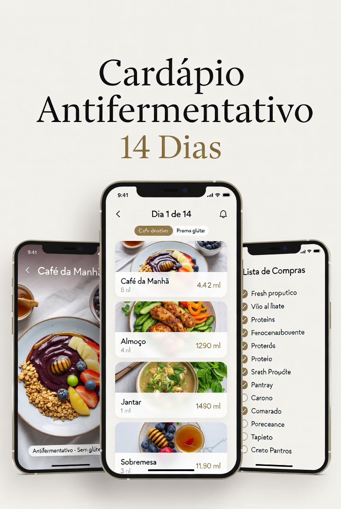
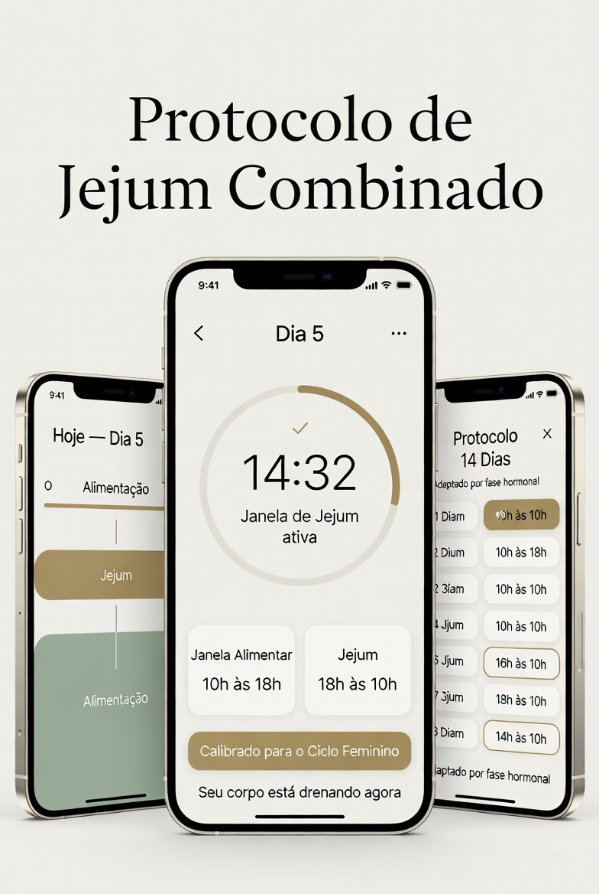
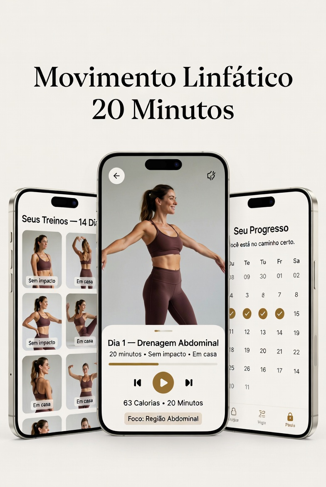
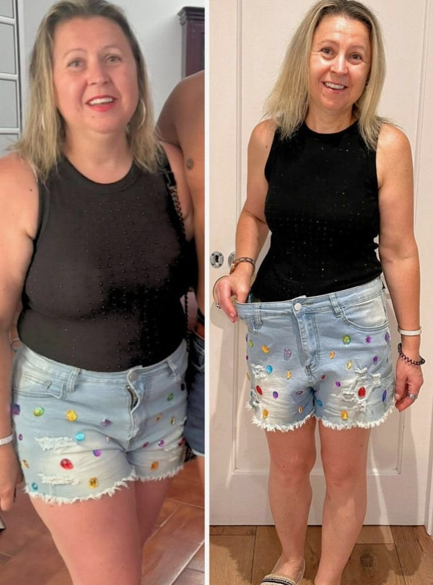
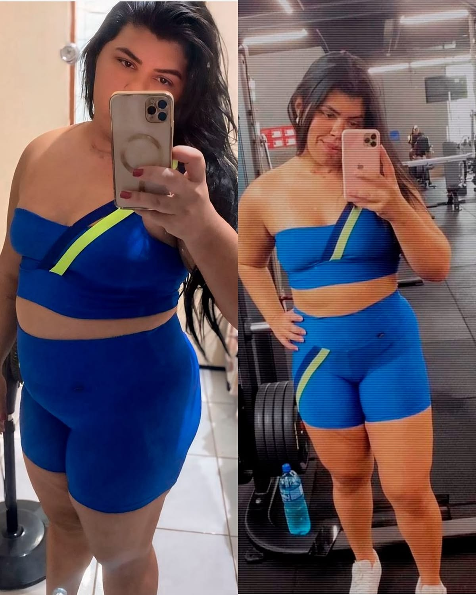

Sua barriga não é gordura. Está ENTUPIDA.
87% das mulheres acima de 35 têm Entupimento Abdominal Crônico — a real causa da barriga que não desincha por mais dieta que faça. Esse teste identifica qual dos 3 tipos é o seu — e libera o protocolo “Desentupidor Abdominal” personalizado pra drenar em 14 dias.
Gratuito · Resultado imediato · Sem cadastro inicial
Primeiro, me conta: quantos anos você tem?
A faixa etária define qual das três origens do problema está mais ativa no seu corpo.
Como você descreveria sua situação hoje?
Você já percebeu que sua barriga varia ao longo do dia — menor de manhã, maior à tarde?
Essa variação é um dos principais sinais do padrão que estamos identificando.
O que você já tentou pra resolver a barriga?
Isso nos ajuda a entender por que os métodos anteriores não chegaram na origem do problema.
Você já perdeu peso em outras partes do corpo, mas a barriga ficou?
Como essa barriga afeta a sua vida hoje?
Se você chegou até aqui, provavelmente já se perguntou mais de uma vez: “o que há de errado comigo?”
Nada. O problema nunca foi você.
Dieta
Criada para queimar excesso calórico
Exercício
Criado para gastar energia
Jejum
Criado para criar janela de queima
Nenhum deles foi criado para tratar o que realmente está na barriga da maioria das mulheres depois dos 30.
Elas usaram as ferramentas certas para o problema errado.
Fernanda, 41 anos — São Paulo
“Fiz reeducação alimentar por dois anos. Perdi 6 kg, o rosto afinou, as pernas melhoraram — mas a barriga ficou igual. Achei que era o meu corpo mesmo, que não tinha jeito. Só depois entendi que eu estava tratando o problema errado o tempo todo.”
Continue. As próximas perguntas revelam exatamente o que está acontecendo no seu caso.
Qual é o seu peso aproximado hoje?
Essencial para calibrar o protocolo correto para o seu biotipo.
Qual é a sua altura?
Junto com seu peso, define a estratégia de drenagem mais eficaz para você.
O que você sente com mais frequência na região da barriga?
Sua barriga piora em alguma fase do mês ou piorou depois de uma certa idade?
Há quanto tempo você tenta resolver essa barriga sem conseguir?
Existe uma razão específica pela qual a barriga resiste a tudo.
Depois dos 30, a região abdominal se torna o principal alvo do corpo para acumular três coisas ao mesmo tempo:
Gás
Produzido pela fermentação intestinal
Líquido
Retido por sinal hormonal
Resíduos inflamatórios
Que o sistema linfático não consegue drenar
Isso tem um nome:
Entupimento Abdominal Crônico
É exatamente por isso que tudo que você tentou funcionou em outras partes do corpo — mas não ali.
Continue. As próximas perguntas identificam qual das três origens está mais ativa no seu caso.
Qual dessas situações descreve melhor o que você vive?
Você já comeu algo saudável e ficou com a barriga maior do que antes de comer?
A lógica do fracasso dos outros métodos fica clara:
Reduziu caloria
O músculo fortaleceu
Queimou gordura calórica
Aliviou o sintoma por 1 dia
Não foi falta de esforço.
Foi ferramenta errada para problema errado.

Juliana, 38 anos — Belo Horizonte
“Passei 4 anos fazendo de tudo. Academia todo dia, jejum 16/8, low carb, chá de ora-pro-nóbis, berberina. Perdi peso mas a barriga ficou dura e grande como sempre. Quando entendi o que realmente estava ali dentro, tudo fez sentido.”
Esponja encharcada não desaparece com déficit calórico.
Ela drena — quando você aplica o protocolo certo.
Quanto você quer perder na barriga nos próximos 14 dias?
Esse número define qual fase do protocolo você vai precisar priorizar.
Você tem alguma roupa guardada esperando o dia que vai emagrecer?
O que você mais quer sentir quando resolver a barriga?
Quanto tempo você consegue dedicar por dia para cuidar do seu corpo?
Agora que você entendeu o Entupimento Abdominal Crônico, faz sentido por que nada funcionou antes?
Se você tivesse um protocolo completo, organizado dia a dia, que trata as três origens ao mesmo tempo — você seguiria por 14 dias?
O que te impediria de começar hoje?
Seu perfil está identificado.
O que as suas respostas mostram é claro: você não tem um problema de disciplina. Não tem um problema de força de vontade. Não tem um problema de metabolismo.
Você tem o Entupimento Abdominal Crônico instalado — e ele nunca foi tratado na origem certa.
É por isso que a barriga ficou depois de cada dieta. É por isso que ela voltou depois de cada esforço. É por isso que você fez tudo certo e não viu resultado onde mais precisava.
Existe uma forma de tratar as três origens ao mesmo tempo. Em 14 dias. Sem academia, sem passar fome, sem sofrimento.
O seu diagnóstico completo e o próximo passo estão na próxima página.
Analisando suas respostas...
Raspe para receber um presente especial!
Queremos que você comece sua jornada com uma agradável surpresa.
50%
desconto
Desentupidor Abdominal
Seu diagnóstico está pronto.
Suas respostas revelaram o TIPO do seu entupimento abdominal — e por que nenhuma dieta, chá ou academia tocou nele até hoje.
🔎 Diagnóstico personalizado:
Você tem Entupimento Abdominal Crônico (EAC) — e o protocolo pra VOCÊ, com base no seu tipo, já está montado.
Barriga entupida DESENTOPE.
Quando você aplica o protocolo certo pro SEU tipo de entupimento — a barriga drena de um jeito que até o espelho vira depoimento.
Por que nada funcionou até hoje
Você já tentou de tudo. Dieta da proteína. Jejum intermitente. Chá de hibisco. Ozempic caseiro. Gelatina bariátrica. Pilates. Contou caloria em app até enlouquecer. E a barriga continua lá.
Não é culpa sua. É porque você está tratando gordura quando seu problema é entupimento. São coisas diferentes. Precisam de tratamentos diferentes.
87% das mulheres acima de 35 anos têm EAC (Entupimento Abdominal Crônico) — acumulação de gás, retenção líquida, inflamação crônica de baixo grau e estagnação linfática na região abdominal. É isso que deforma sua barriga. Não gordura.
“Passei 8 anos recomendando dieta hipocaórica pra mulheres que não precisavam disso. Elas não tinham gordura. Tinham entupimento. Quando entendi isso, desenvolvi o protocolo Desentupidor — e o resultado foi absurdo.” — Camila Moura, CRN
Apresentando o Desentupidor Abdominal
O único protocolo de 14 dias desenvolvido especificamente pra tratar Entupimento Abdominal Crônico na mulher acima de 35 — já validado em 3.000+ atendimentos de consultório.
Não é dieta. Não é treino. É um protocolo clínico adaptado pra casa, dividido em 3 fases (Drenagem Aguda · Drenagem Ativa · Selagem Final), com cada dia mapeado passo a passo — cardapio, chás, rituais de drenagem, medidas.
O que você NUNCA mais vai precisar pagar
O Desentupidor Abdominal faz o trabalho de todos acima — de forma natural, em casa, em 14 dias.
Acesso imediato à plataforma do Desentupidor — app estilo Netflix, no seu celular, com todos os módulos destravando conforme você avança:

Módulo 1 · Protocolo do Desentupidor Abdominal 14D
O mapa clínico completo da sua jornada — 3 fases projetadas pela Dra. Camila: Drenagem Aguda (D1-5) · Drenagem Ativa (D6-10) · Selagem Final (D11-14). Cada dia mapeado passo a passo, com vídeo de abertura.
Valor avulso: R$ 197Módulo 2 · Cardápio Antifermentativo 30D
30 dias completos de cardápio pronto (café, almoço e jantar) — dividido em Fase Ativa (D1-14) + Fase Manutenção (D15-30). Você desentope E aprende a não entupir de novo. Lista de compras semanal + guia de substituições.
Valor avulso: R$ 197
Módulo 3 · Como Fazer Jejum (do Jeito Certo)
O jejum intermitente feito especificamente pro corpo feminino 35+ — protocolos calibrados (12h, 14h, 16h), o que comer pra quebrar o jejum sem rebote, erros mais comuns que INCHAM quem tenta jejum errado.
Valor avulso: R$ 127Módulo 4 · A Bebida que Seca (Matinal + Noturna)
Duas fórmulas exclusivas desenvolvidas pela Camila: a Bebida Matinal que ativa drenagem linfática em jejum + a Bebida Noturna que elimina gases fermentativos enquanto você dorme. Parte das 2 é responsável por até 7cm de cintura dentro do protocolo completo.
Valor avulso: R$ 147
Módulo 5 · Rituais Diários de Drenagem Caseira (7 min/dia)
7 minutos por dia que aceleram 40% do resultado. Ritual Matinal (automassagem linfática + elevação de pernas) + Ritual Noturno (respiração diafragmática + drenagem abdominal profunda). Sem impacto, qualquer idade, qualquer condicionamento.
Valor avulso: R$ 97Módulo 6 · Ajustes Personalizados Para Cada Tipo De Entupimento
Você descobriu seu tipo no quiz: Fermentativo, Hormonal ou Linfático. Este módulo destrava os ajustes específicos pro SEU tipo — alimentos extras, chás potência, rituais focados, sequência de drenagem adaptada.
Valor avulso: R$ 147Módulo 7 · Checklist Diário + Diário de Medidas
14 páginas interativas de acompanhamento dia por dia — tarefas, hidratação, medidas de cintura/barriga, como me senti. Imprimível ou digital direto no app. Quem mede, termina.
Valor avulso: R$ 67Módulo 8 · Desafio Seca Tudo 21/21/21
Você desentopeu nos primeiros 14 dias. Agora vai secar de verdade. 21 dias · 21 exercícios caseiros · 21 minutos por dia. Um exercício novo a cada dia, sem impacto, na sala de casa, sem equipamento. Quem conclui, entra no Clube Desentupidas.
Valor avulso: R$ 197Exclusivo de quem completa o quiz:
+2 BÔNUS DE BLINDAGEM
Desentupimento Relâmpago 48h
Protocolo acelerado pra você ver resultado visível antes do Dia 3. Elimina 1-2cm de barriga e 0,5-1,5kg de retenção líquida em 48 horas. É o “aperitivo” pra você ter certeza que o sistema funciona pra você.
Valor: R$ 97Desentupidor Express (pra Evento)
3 protocolos de emergência: você tem 10-14 dias, 5-9 dias ou 72 HORAS antes do evento? Cada cenário tem seu plano específico pra chegar no seu melhor no dia.
Valor: R$ 67Tudo na palma da sua mão. Acesso imediato. Você começa hoje e em 14 dias olha no espelho.
Sem tentativa. Sem adivinhação. Sem dieta cega. Protocolo clínico direto no seu celular.
A VIDA ANTES DO DESENTUPIDOR ABDOMINAL…
Durante o protocolo você resolveu esses problemas de uma vez por todas:
- ✕ Sentimento constante de culpa e vergonha sobre o próprio corpo.
- ✕ Frustração por não conseguir sustentar uma dieta.
- ✕ Passar vontade de comer os “docinhos”.
- ✕ Ficar irritada e com fome por restrição alimentar.
- ✕ Não poder comer suas comidas preferidas.
- ✕ Barriga estufada depois de qualquer refeição — mesmo saudável.
- ✕ Se sentir culpada por não ter conseguido novamente.
A VIDA APÓS O DESENTUPIDOR ABDOMINAL…
Essa será sua realidade após o protocolo. Você vai:
- ✓ Comer sem culpa e sem compulsão.
- ✓ Se sentir orgulhosa e motivada por conseguir manter uma alimentação saudável e equilibrada.
- ✓ Comer seus “docinhos” sem culpa no cartório.
- ✓ Nunca mais sentir fome por ficar sem comer.
- ✓ Comer suas comidas preferidas sem preocupações.
- ✓ Drenar o inchaço abdominal sem precisar passar fome.
- ✓ Acabar de uma vez por todas com o efeito sanfona.
SEU PROGRESSO ESPERADO NO DESAFIO…
Em 14 dias aplicando o protocolo corretamente, você sai do pico de inchaço abdominal até a drenagem completa da esponja.
O que acontece no seu corpo
A esponja para de encharcar
Gás eliminado. Inchaço da tarde diminui. Roupas começam a sentar diferente.
O sistema linfático acorda
Líquido drenado. Barriga afinando — não é peso saindo, é volume saindo.
Reset hormonal completo
Corpo para de reter. Esponja vazia. Você olha no espelho e não acredita.
Resultados que nos enchem de orgulho



Começa agora a desentupir
Escolha a opção que faz mais sentido pra você:
Desentupidor Abdominal
Plataforma completa · 30 dias de acesso
- ✓ Módulo 1 · Protocolo do Desentupidor 14D (3 fases)
- ✓ Módulo 2 · Cardápio Antifermentativo 30 DIAS
- ✓ Módulo 3 · Como Fazer Jejum (do jeito certo)
- ✓ Módulo 4 · A Bebida que Seca (Matinal + Noturna)
- ✓ Módulo 5 · Rituais Diários de Drenagem (7 min)
- ✓ Módulo 6 · Ajustes pro seu Tipo de Entupimento
- ✓ Módulo 7 · Checklist Diário + Diário de Medidas
- ✓ Módulo 8 · Desafio Seca Tudo 21/21/21 (destrava no D14)
- ✓ Bônus 1 · Desentupimento Relâmpago 48h
- ✓ Bônus 2 · Desentupidor Express (pra Evento)
Valor dos 8 módulos se comprados separados: R$ 1.176
Com o cupom da raspadinha:
R$ 47
ou 5x de R$ 9,40 sem juros
Economia de R$ 1.129 · 96% OFF
🔒 Compra segura · Acesso imediato · 7 dias de garantia
Desentupidor Vitalício + Clube Desentupidas
Acesso PARA SEMPRE + comunidade fechada
- ✓ Tudo do plano anterior (8 módulos + 2 bônus)
- ✓ Acesso vitalício na plataforma — volta sempre que precisar (pós-festas, TPM, pré-evento)
- ✓ Clube Desentupidas — comunidade fechada com novas receitas e rituais mensais
- ✓ Aula bonus: “Como manter a barriga desentupida pra sempre”
- ✓ Protocolo de Emergência 24h (pra situações de evento imediato)
- ✓ Atualizações futuras dos 8 módulos gratuitas
- ✓ Suporte prioritário por email durante 60 dias
Valor de tudo + clube: R$ 1.776
Com o cupom da raspadinha:
R$ 97
ou 10x de R$ 9,70 sem juros
95% de desconto · Economia de R$ 1.679
🔒 Compra segura · Acesso imediato · 7 dias de garantia
Garantia tripla espelho
1. Testa o protocolo por 7 dias seguindo às regras. Se não sentir a barriga drenar — devolvemos 100% do dinheiro.
2. Você fica com todo material mesmo após o reembolso. Receitas, chás, rituais. Seu.
3. Sem burocracia, sem pergunta, sem formulário cansativo. Um email basta.
A barriga entupida tem uma data pra desentupir.
Em 14 dias você olha no espelho e entende o que foi diferente desta vez.
🔥 DESENTUPIR MINHA BARRIGA🔒 7 dias de garantia · Acesso imediato
Perguntas frequentes
Funciona mesmo pra mulher na menopausa?
Sim — e funciona melhor que pra qualquer outro grupo. 72% das mulheres na faixa de 45-55 que fizeram o protocolo perderam mais de 4cm de cintura em 14 dias. Um dos 3 tipos de Entupimento Abdominal Crônico é justamente o Hormonal (TPM severa ou menopausa). O módulo 6 (Ajustes por Tipo) tem trilha específica pra esse cenário.
Preciso de academia, esteira ou equipamento?
Nenhum. Os rituais diários são 7 minutos de manhã + 7 minutos à noite — automassagem, respiração diafragmática, elevação de pernas na parede. Zero impacto, qualquer condicionamento, qualquer idade.
Vou passar fome?
Não. O cardápio tem 5 refeições por dia (café, lanche, almoço, lanche, jantar). A lógica não é restrição calórica — é drenagem. Você come bem e desincha.
Diferença entre isso e Ozempic/Mounjaro?
Ozempic e Mounjaro mascaram o sintoma (diminuem fome, fazem esvaziamento gástrico artificial), mas não tratam o entupimento por trás da barriga. Ao parar a aplicação, a barriga volta. O Desentupidor Abdominal trata a CAUSA — fermentação intestinal, estagnação linfática, inflamação crônica. Resultado permanente (se mantido).
Tenho hipotireoidismo / intestino preso / polícistico, vai funcionar?
Sim. Essas condições são justamente o que faz o Entupimento Abdominal Crônico se agravar. O protocolo foi desenvolvido pra a mulher real, com o corpo real — não pra modelo fitness. Se você tem condição séria não diagnosticada, consulte seu médico antes.
Como funciona a entrega? Recebo em PDF? WhatsApp?
Em área de membros exclusiva, estilo app, no seu celular. Login e senha liberados imediatamente após o pagamento. Você acessa o protocolo inteiro num só lugar — módulos, cardapios, receitas, vídeos dos rituais, checklist.
Quando posso começar?
Agora mesmo. Confirmação do pagamento → email com login → acesso imediato à plataforma.
E se eu não gostar ou não tiver resultado?
Você tem 7 dias de garantia incondicional. Se seguir as regras dos 7 primeiros dias (medição, hidratação, cardápio, rituais) e não sentir diferença na barriga — devolvemos 100% do valor. E você fica com todo material.
Começa agora. Em 14 dias você olha no espelho e entende por que nenhuma dieta resolveu até hoje.
🔥 DESENTUPIR MINHA BARRIGA🔒 7 dias de garantia · Acesso imediato · Pagamento seguro